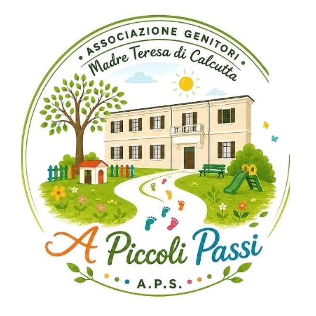
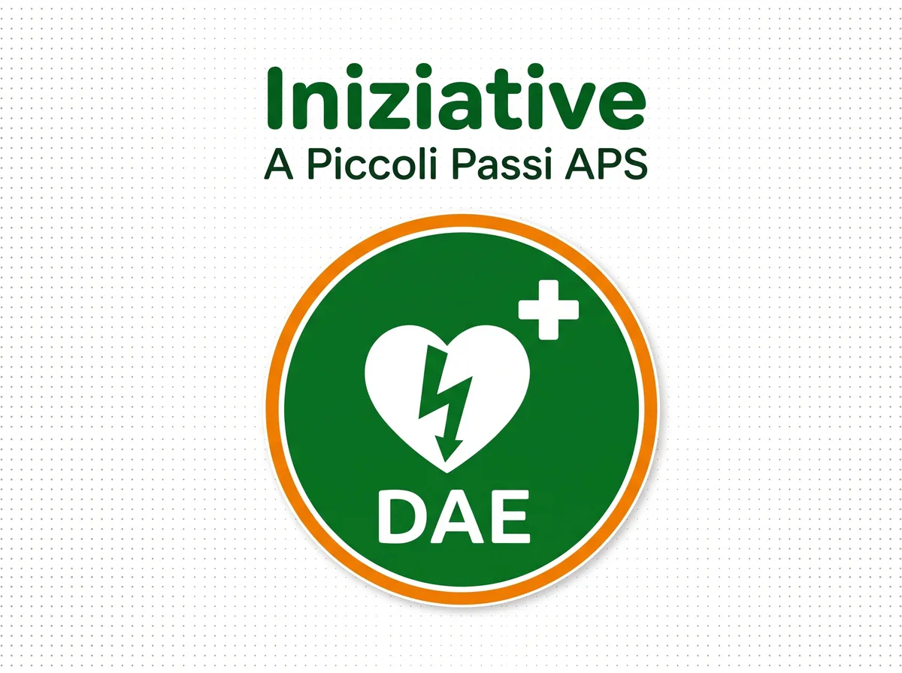

Associazione Genitori "A Piccoli Passi" APS
L'associazione delle famiglie del Polo d'Infanzia Paritario "Madre Teresa di Calcutta" di San Pietro in Vincoli.

"Insieme, un passo alla volta."
Un gruppo di genitori che si mette insieme per sostenere e valorizzare il percorso educativo dei propri figli, arricchendo la scuola con progetti concreti e momenti di comunità.
Cosa facciamo
Curiamo gli spazi
Aule, giardino e ambienti scolastici più belli e accoglienti per i bambini.
Sosteniamo la scuola
Materiali didattici, arredi e strumenti per arricchire l'offerta formativa.
Promuoviamo progetti
Laboratori, letture animate, psicomotricità, musica ed educazione all'aperto.
Organizziamo eventi
Feste, mercatini e spettacoli che coinvolgono tutta la comunità scolastica.
Creiamo comunità
Ascolto, aiuto reciproco e inclusione: nessuna famiglia si senta mai sola.
Valorizziamo il territorio
Collaboriamo con enti e realtà locali per il bene dei bambini e delle famiglie.
Un progetto che ci sta a cuore

"Un battito per la vita" — Progetto DAE
Stiamo raccogliendo fondi per l'acquisto di un defibrillatore semiautomatico (DAE) da installare nel plesso scolastico, insieme a corsi di formazione BLSD per il personale.
Un piccolo gesto che può salvare una vita.
Scopri tutte le iniziative, come diventare socio e supportare i progetti.